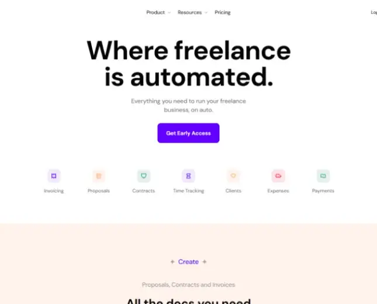
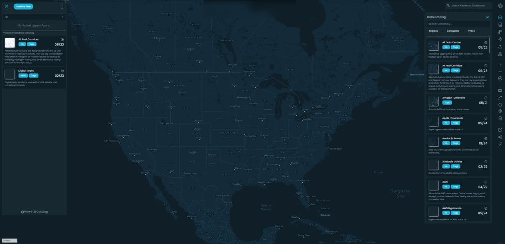
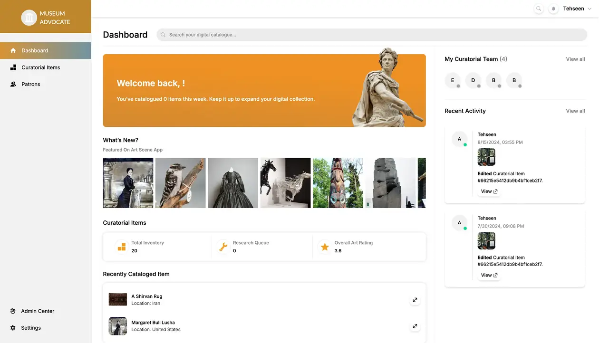
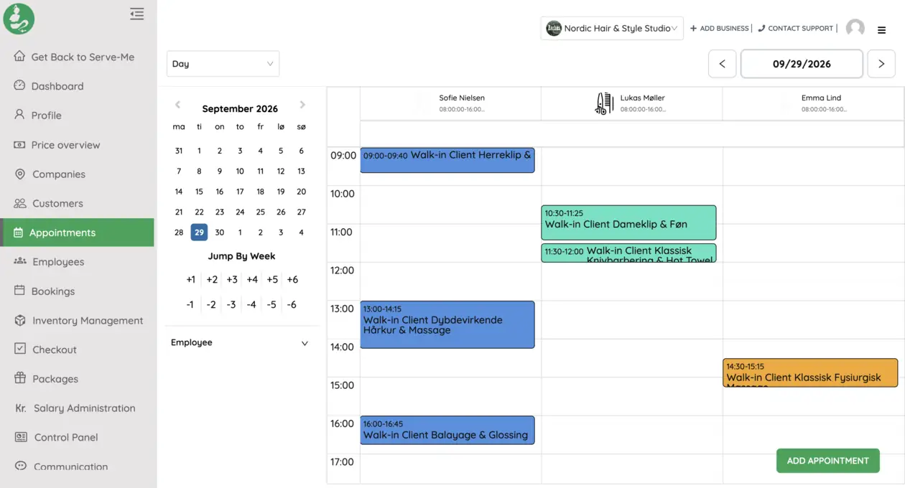
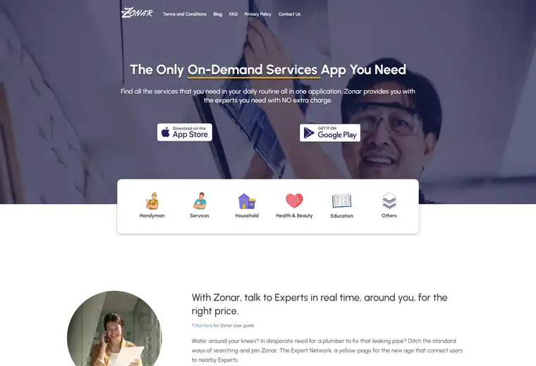
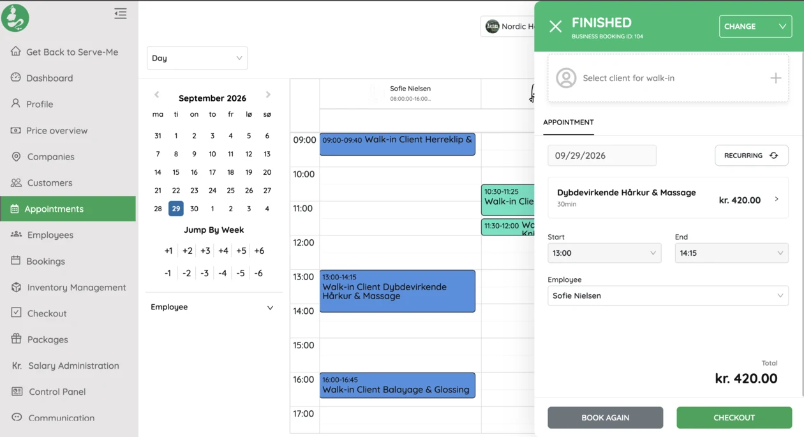

oto.work
Freelance management SaaS with invoicing, payments, contracts, reminders, and proposal generation.
I’m Tehseen Ahmed, a senior software engineer with nearly 10 years of experience delivering production web, mobile, API, and platform systems.

Three projects showing architecture, delivery ownership, production constraints, and measurable outcomes.

Museum AdvocateMove an inherited art app to museum-owned data.Owned architecture, migration, deliveryEvidence three connected products
Serve MeModel booking around real salon operations.Owned architecture and backend coreEvidence 20–30 salon pilot Infrastructure planningKeep map, climate, energy, and operational data together.Owned full-stack product deliveryEvidence internal and client adoptionNearly 10 years in production software, including 8+ years building Node.js backends and leading 50+ web and mobile deliveries from architecture through release.
Selected systems beyond the three detailed case studies.

Freelance management SaaS with invoicing, payments, contracts, reminders, and proposal generation.

Client-side data flows, REST and GraphQL API shaping, and maintenance portals.

Web and mobile products for fitness, wellness, and peer self-improvement.
One system recently shipped and one active build extending my product-engineering practice.
A local-first Android and Mac system that moves original photos and videos to an external drive over home Wi-Fi—without hosted cloud storage, accounts, or a subscription.
A production-shaped Next.js project for turning conversations and screenshots into validated, editable task specifications and safe, user-approved actions.
Direct client feedback, with public review links where available.
“Tehseen has been crucial in developing several app and web solutions for my company. He is great at communication.”
“Tehseen really cares about your product and getting another project member into the group.”
“They were critical in building our software—honest, hardworking, and reliable.”
“The company has grown with us, and it has been a pleasure to work with this team.”
If your product has complicated rules, an inherited architecture, or a delivery problem that needs senior ownership, tell me what is getting in the way.
tehseen.siddiq@gmail.com